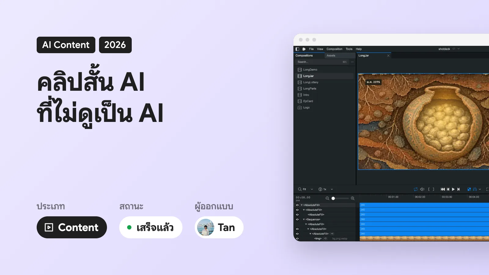
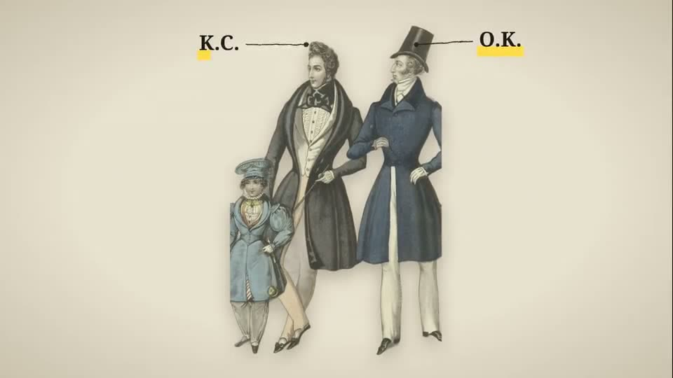
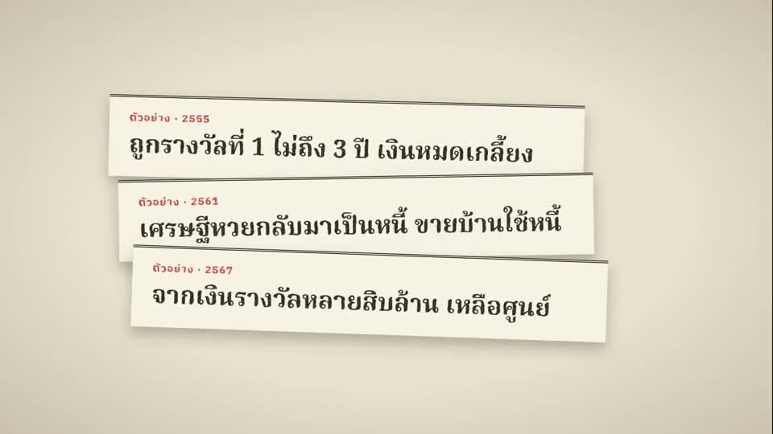
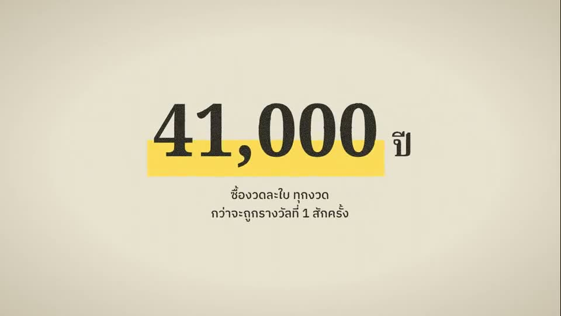
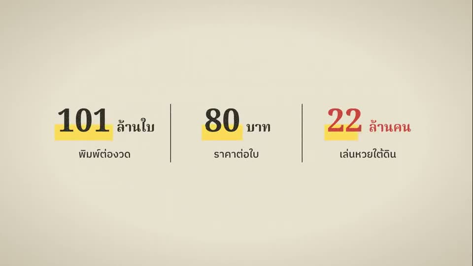
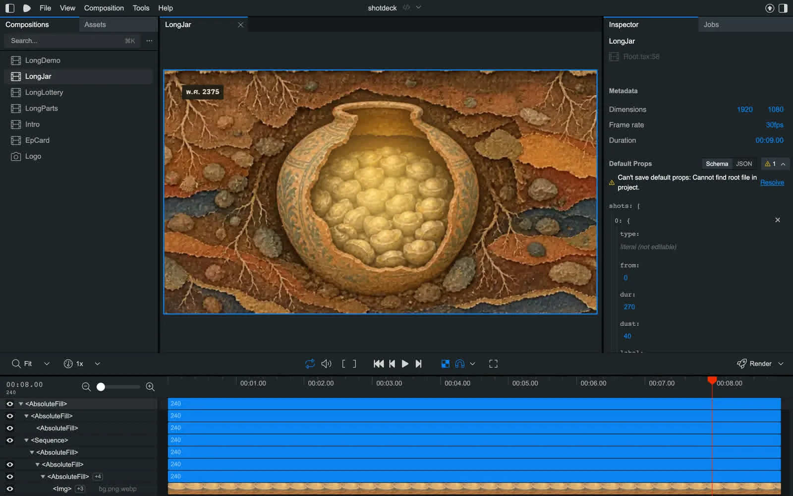
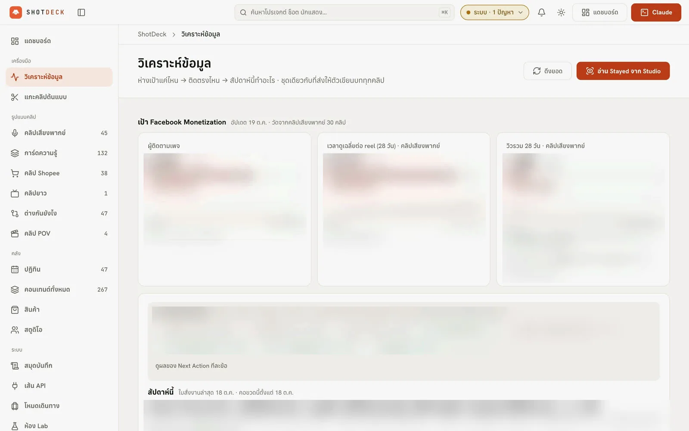

Shotdeck
งานวางกลยุทธ์ product ของช่องคลิปความรู้ที่ผลิตด้วย AI — เขียนสิ่งที่จะไม่ทำก่อนสิ่งที่จะทำ วัดต้นทุนจากการทดลองจริงก่อนตั้งงบ และตั้งเกณฑ์วัดผลไว้ล่วงหน้าก่อนจะมีตัวเลขให้เข้าข้างตัวเอง

โจทย์ไม่ใช่ “จะ gen คลิปยังไง” แต่คือ “ทำไมคลิป AI ส่วนใหญ่ถึงถูกเลื่อนผ่าน” — งานชิ้นนี้เป็นการวางกลยุทธ์ product ตั้งแต่นิยามคู่แข่ง เลือก format ล็อกกติกาภาพ ไปจนถึงประมาณต้นทุนต่อคลิปจากการทดลองจริง ก่อนจะเปิดช่องสักคลิปเดียว
ปัญหาไม่ใช่ว่า AI ทำภาพไม่สวย แต่คือไม่มีใครเขียนบทให้มัน
ฟีดทุกแพลตฟอร์มเต็มไปด้วยคอนเทนต์ที่ปั๊มด้วยเครื่องมือเดียวกัน จนคนเริ่มแยกออกและเลื่อนผ่านตั้งแต่วินาทีแรก
คลิปที่จุดประกายเรื่องนี้ไม่ได้ชนะเพราะภาพสวยกว่าใคร — มันมีมุกเดียว หักมุมครั้งเดียว แล้วจบทันที คนดูหลักแสน สิ่งที่ขาดในตลาดจึงไม่ใช่กำลังผลิต แต่คือ craft ของคนเขียนบท
ปั๊มปริมาณโดยไม่มีบท
ช่องจำนวนมากใช้ AI เป็นเครื่องเพิ่มจำนวนคลิป ไม่ใช่เครื่องมือเล่าเรื่อง ผลคือคอนเทนต์ที่ถูกต้องตามสูตรทุกอย่าง ยกเว้นข้อที่ทำให้คนอยากดูจนจบ
ปล่อยหน้าตาเริ่มต้นของเครื่องมือ
ไม่ได้กำหนดสไตล์ของช่องเอง ใช้ค่าเริ่มต้นของโมเดลที่ทุกคนใช้เหมือนกัน คนดูจึงจำช่องจากภาพไม่ได้ และรู้ทันทีว่าเป็นของที่ gen มา
คลิปตายภายในสองวัน
เนื้อหาที่เกาะกระแสมียอดพุ่งเร็วแล้วจบ ต้องวิ่งหาหัวข้อใหม่ตลอดเวลา กลายเป็นงานประจำที่ไม่มีวันหยุด แทนที่จะเป็นรายได้เสริม
เสียงเล่าภาษาไทยคือจุดที่เครื่องมือทั่วไปพัง
ภาษาที่มีวรรณยุกต์ทำให้เสียงสังเคราะห์ทั่วไปอ่านผิดจังหวะและผิดคำ โดยเฉพาะศัพท์เฉพาะกับตัวเลข ซึ่งเป็นหัวใจของคลิปสายความรู้พอดี
นิยามข้อได้เปรียบใหม่ ไม่ใช่ตัวตน แต่คือ pipeline กับรสนิยม
เป้าหมายจริงคือรายได้เสริม โดยไม่ต้องออกกล้องและไม่ได้ตั้งใจจะเป็นหน้าช่อง ข้อได้เปรียบจึงต้องหาจากที่อื่น
ต่อ pipeline ได้
เชื่อมบทเข้า → คลิปออก เป็นสายอัตโนมัติ ต้นทุนต่อคลิปต่ำกว่าและสม่ำเสมอกว่าการ gen มือทีละคลิป ซึ่งเป็นงานที่คนสายซอฟต์แวร์ทำได้แต่ครีเอเตอร์ทั่วไปทำไม่ได้
ทำ art direction เป็นระบบ
เขียนกติกาภาพของช่องเหมือนทำ design token ทุกคลิปอยู่ในโทนเดียวกันจนคนจำช่องได้จากภาพ ซึ่งคือเส้นแบ่งระหว่างของที่ดูตั้งใจกับของที่ดูปั๊ม
คิดแบบ product
วาง format ที่ทำซ้ำได้ วัด retention แล้ว iterate เหมือนทำ UX แทนที่จะวัดความสำเร็จจากยอดวิวของคลิปเดี่ยว ๆ
สิ่งที่ล็อกแล้ว และสิ่งที่ตั้งใจปล่อยว่างไว้
ล็อกเฉพาะข้อที่กระทบต้นทุนและหน้าตาของช่อง ส่วนที่เหลือรอให้คลิปนำร่องเป็นคนตอบ


| เรื่อง | สถานะ | เหตุผล |
|---|---|---|
| สัดส่วนภาพ | ล็อกแล้ว | แนวตั้ง เพราะตรงกับพฤติกรรมคนดูและช่องทางที่ตั้งใจไป — และยัง re-render เป็นแนวนอนจาก asset ชุดเดิมได้ทีหลัง |
| ความยาว | ล็อกแล้ว | ยาวเท่ากันทุกคลิปเป็นกติกาประจำช่อง ทำให้วัด retention เทียบกันได้จริง และบังคับให้บทต้องคม |
| เกณฑ์เลือกหัวข้อ | ล็อกแล้ว | เอาเฉพาะความรู้ที่อีกห้าปีกลับมาดูยังใช้ได้ ช่องจะกลายเป็นห้องสมุดที่ยอดสะสมจากการค้นหา ไม่ใช่ฟีดที่ต้องวิ่งตามกระแส |
| กติกาภาพ | ล็อกแล้ว | ทุกสิ่งบนจอต้องดูเป็นของที่ถูกตัดมาแปะ ทั้งคน สัตว์ สิ่งของ และแผนที่ ห้ามมีของเหมือนจริงลอยอยู่นอกภาษาภาพนี้ |
| เสียงเล่า | ยังไม่ล็อก | ตั้งใจให้เทียบของจริงหลายเจ้าด้วยบทที่มีคำยากและตัวเลข ก่อนตัดสิน — และมีทางที่ต้นทุนศูนย์คือพากย์เอง ซึ่งอาจดีที่สุดสำหรับเอกลักษณ์ช่องด้วย |
| ชื่อช่อง | ยังไม่ล็อก | ตั้งใจไม่คิดชื่อก่อนพิสูจน์ว่า pipeline ทำงานได้ เพราะชื่อที่ตั้งก่อนรู้ว่าช่องจะเป็นอะไร มักต้องเปลี่ยนทีหลัง |
format นี้ไม่ต้อง gen วิดีโอทั้งคลิป — เกือบทั้งหมดคือภาพนิ่งที่กำกับศิลป์แล้ว บวกกับการเคลื่อนไหวที่ทำด้วยโค้ด ซึ่งถูกกว่าการ gen วิดีโอหลายเท่า และคุมสไตล์ได้เต็มร้อย เหลือใช้วิดีโอจริงเฉพาะช็อตเปิดหรือช็อตที่ต้องว้าวจริง ๆ
ประมาณต้นทุนจากการทดลองจริง ไม่ใช่จากราคาหน้าเว็บ
ทดลอง gen จริงแล้วพบว่าโหมดอัตโนมัติเลือกโมเดลแพงให้เอง ซึ่งทำให้ตัวเลขที่ประมาณไว้ตอนแรกคลาดจากความจริงหลายเท่า


โหมดอัตโนมัติเลือกโมเดลแพงให้เอง ต้นทุนต่อคลิปเลยพุ่งโดยไม่รู้ตัว
ตอนทดลองครั้งแรกปล่อยให้เครื่องมือเลือกโมเดลเอง ได้ภาพสวยก็จริงแต่ราคาต่อภาพสูงกว่าที่ควรหลายเท่า ถ้าคิดต้นทุนต่อคลิปจากตัวเลขรอบนั้น จะสรุปผิดว่าโมเดลธุรกิจนี้ไม่คุ้ม
สิ่งที่อยากทำก่อนที่สุด คือสิ่งที่ควรทำทีหลังที่สุด
แรงกระตุ้นตอนเริ่มโปรเจกต์คือรีบตั้งชื่อช่อง ทำโลโก้ แล้วเปิดช่อง ซึ่งเป็นงานที่สนุกแต่ไม่ตอบคำถามว่าสูตรนี้ทำซ้ำได้จริงไหม
เลือกได้อย่างเดียวระหว่างยอดมาไวกับยอดอยู่ยาว ดูเหมือนจะต้องเลือก
หัวข้อกระแสได้ traffic เร็วแต่ตายเร็ว หัวข้อความรู้อยู่ได้นานแต่โตช้า ถ้าเลือกข้างใดข้างหนึ่งก็เสียอีกข้างไปทั้งหมด
สายการผลิตที่ออกแบบให้แรงต่อคลิปลดลงเรื่อย ๆ
งานหนักถูกย้ายไปอยู่ที่ template ซึ่งเขียนครั้งเดียว ส่วนคลิปถัด ๆ ไปคือการเติมของเข้า template

บทและรีเสิร์ช
ให้ AI ช่วยหาและร่าง แต่คนตรวจข้อเท็จจริงเองทุกครั้ง เพราะคลิปสายความรู้ที่ผิดหนึ่งจุดคือความน่าเชื่อถือทั้งช่อง
สตอรีบอร์ดเป็นภาพนิ่ง
แตกบทเป็นภาพจำนวนหนึ่งต่อคลิป ซึ่งเป็นหน่วยที่ควบคุมต้นทุนได้ ต่างจากการคิดเป็นวินาทีของวิดีโอ
gen ภาพตามกติกาภาพของช่อง
ทุกภาพต้องอยู่ในภาษาตัดแปะเดียวกัน ภาพไหนหลุดโทนคือ gen ใหม่หรือตัดทิ้ง ไม่ปล่อยผ่านเพราะเสียดายเครดิต
เสียงเล่า
เทียบของจริงหลายเจ้าด้วยบทที่มีคำยาก และมีทางสำรองที่ดีคือพากย์เอง ซึ่งต้นทุนศูนย์และเป็นธรรมชาติที่สุด
ประกอบด้วย template ที่เขียนเป็นโค้ด
ทุกคลิปคือการยัดบทกับภาพเข้า template เดิมแล้วสั่ง render ไม่ต้องนั่งตัดต่อมือ — จุดนี้คือข้อได้เปรียบที่คนสายซอฟต์แวร์มีจริง
เกณฑ์วัดผลที่ตั้งไว้ล่วงหน้า ก่อนจะมีตัวเลขให้เห็น
ตั้งไว้ตอนนี้เพราะถ้ารอไปตั้งตอนเห็นผลแล้ว มันจะกลายเป็นการหาเหตุผลเข้าข้างตัวเลขที่ได้มา

- ดูอัตราการดูจนจบมากกว่ายอดผู้ติดตาม — คำถามที่ต้องตอบคือมุกหรือเนื้อหาไปถึงปลายทางไหม ไม่ใช่มีคนกดตามกี่คน
- ต้องมีอย่างน้อยหนึ่งคลิปที่คนพูดถึงเนื้อหา ไม่ใช่พูดถึงว่ามันทำด้วย AI — ถ้าคอมเมนต์ทั้งหมดพูดถึงเครื่องมือ แปลว่า craft ยังไม่ผ่าน
- วัดว่าสูตรทำซ้ำได้จริงไหม — จับเวลาต่อคลิปตั้งแต่บทถึง render เสร็จ แล้วดูว่าคลิปที่สองกับสามใช้เวลาน้อยลงจริงหรือเปล่า
- รายได้ตัวแรกมาจากลิงก์แนบ ไม่ใช่จากโฆษณา — ตั้งความคาดหวังไว้ตรง ๆ ว่าสามเดือนแรกเข้าใกล้ศูนย์ เพื่อไม่ให้เลิกกลางทางเพราะคาดหวังผิด
ขอบเขตที่ตั้งใจไม่ทำ
งานนี้เขียนสิ่งที่ “ไม่ทำ” ไว้ก่อนเริ่ม เพราะเป็นประเภทงานที่ไถลออกนอกทางได้ง่ายมาก
- ไม่ปั๊มคลิปวันละหลายอันแบบไม่มีคุณภาพ — ปริมาณคือสิ่งที่ตลาดมีเกินอยู่แล้ว การเข้าไปแข่งตรงนั้นคือการแข่งในเกมที่แพ้ตั้งแต่ต้น
- ไม่ทำคอนเทนต์ล่อคลิกหรือเรียกยอดด้วยความตกใจ — ได้ยอดเร็วแต่ทำลายเหตุผลที่คนจะกลับมาดูช่องอีก
- ไม่ลงหลายแพลตฟอร์มพร้อมกันตั้งแต่วันแรก — เริ่มช่องเดียวให้พิสูจน์สูตรก่อน แล้วค่อยโพสต์ซ้ำด้วยไฟล์เดิมซึ่งต้นทุนเพิ่มแทบเป็นศูนย์
- ไม่ทำหัวข้อที่หมดอายุ — ข่าว กระแส ผลการแข่งขัน ตัดออกทั้งหมด เพราะขัดกับเป้าที่ต้องการให้ทำครั้งเดียวแล้วเก็บผลยาว